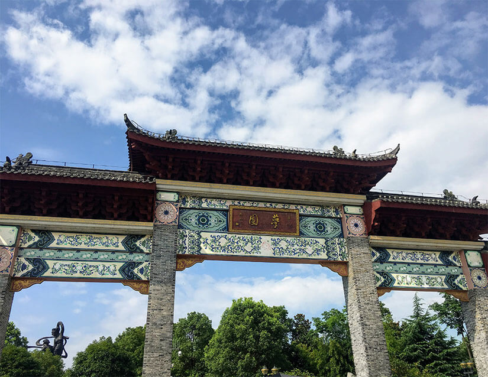

What is ISEC?

ISEC stands for Intercollegiate Summer English Camps. It was originally a group of ten teachers, and first established in 1999 as a student society at Oxford University. Since then over 500 top Western university students have participated.
Over the years, ISEC has held camps in 14 provinces in China and more than 20,000 Chinese primary, secondary, and university students have benefited from our programs.
ISEC has worked in partnership with a number groups, including educational organizations such as China Society of Education Training Center, Root Education, and Yangzhou Educational Service Center, and non-profit organizations such as Beijing UNESCO, Soong Ching Ling Foundation, Communist Youth League, Town and Talent, and Chinese Society of Education.